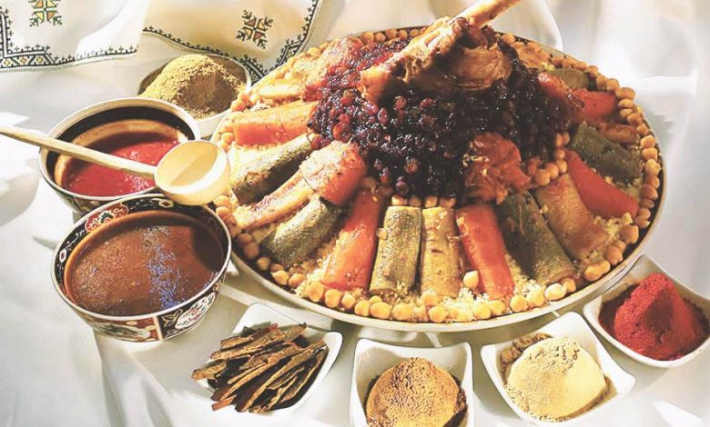

Moroccan Couscous

Description
An authentic recipe for Moroccan Couscous with Seven Vegetables,
the ultimate comfort food to enjoy with family and friends. Lamb, beef,
or chicken is stewed with assorted veggies, then served atop a mound of light,
fluffy steamed couscous. A rich broth seasoned with ginger,
pepper and turmeric is poured over all or offered on the side.
Casablanca style Couscous with Seven Vegetables is my favorite variation of Moroccan couscous,
especially when topped with a caramelized onion and raisin garnish called tfaya.
A much-loved comfort food, many families serve it weekly for Friday lunch,
when they’ll gather round a large communal dish like the one shown above.
Ingredients
Couscous
- 1 kg couscous - (not instant; I prefer medium caliber)
- 55 ml olive oil or vegetable oil
- 1.5 l water, divided - (can use milk for final steaming)
- 2 to 3 tsp salt - (added after 1st steaming)
- 2 tbsp soft butter - (added after final steaming)
Meat and Broth Seasoning
- 1 kg lamb, beef, or goat meat, large pieces on the bone - (or 1 large whole chicken)
- 1 large onion, coarsely chopped
- 3 fresh tomatoes, peeled and coarsely chopped
- 55 ml olive oil or vegetable oil
- 1.5 tbsp salt
- 1 tbsp ginger
- 1 tbsp pepper
- 1 tsp turmeric
- 1 handful parsley and cilantro sprigs, - tied into a bouquet
- 2 tsp smen - Moroccan preserved butter - (optional; reserve until end of cooking)
Traditional Veggies
- 100 g dried chickpeas, soaked overnight
- 1 small head of cabbage, cut in half or quartered
- 3 or 4 medium turnips, peeled and cut in half
- 8 to 10 carrots, peeled - (cut in half lengthwise if large)
- 1 or 2 small tomatoes, peeled, seeded and quartered
- 1 or 2 small onions, cut in half - (can use some whole fresh pearl onions instead)
- 1 small acorn squash, quartered - (or wedge of pumpkin)
- 4 or 5 small zucchini, ends trimmed - (or 8-ball round, cut in half)
Optional Veggies
- 2 or 3 chili peppers or jalapeños - (simmer in a little broth or steam until tender)
- 170 g fresh or frozen fava beans - (add with 2nd steaming)
- 2 or 3 sweet potatoes, peeled and cut in half - (add with 3rd steaming)
- 1 bottle gourd, peeled, cleaned and cut into large pieces - (add with 3rd steaming)
Optional Tfaya - Caramelized Onions and Raisins
- 70 g raisins, - soaked in water for 15 minutes
- 2 or 3 large onions, - preferably red
- 125 ml water
- 2 tbsp butter
- 2 tbsp honey
- 0.5 tsp pepper
- 0.5 tsp cinnamon
- 0.25 tsp ginger
- 0.25 tsp turmeric
- 1 pinch saffron threads, crumbled
- 1 pinch salt
- 1 tsp orange flower water - (optional)
Steps
Ahead of Time
- Soak the dried chickpeas in a large bowl of water overnight. (Or, use a quick soak method: boil the dried chickpeas for 4 or 5 minutes, then turn off the heat and leave them to soak for an hour.)
- Wash and prep your vegetables. Start making the tfaya (optional; see Recipe Notes).
- Set up an area to work with the couscous. In Morocco we use a gsaa (very wide, shallow serving and mixing dish), but another very large wide vessel or bowl can work. Have oil, water, salt, and butter out and ready. Lightly oil the steamer basket of a couscoussier.
Begin Making the Broth - See Recipe Notes if Using Chicken or Making Vegetarian Couscous
- Brown the meat or chicken with the oil, onion, tomatoes and spices in the base of a couscoussier over medium-high heat. Continue cooking, uncovered and stirring frequently, for about 10 to 15 minutes, until a very thick and rich sauce begins to form.
- Add the soaked, drained chickpeas along with the parsley/cilantro bouquet and about 3 quarts (or liters) of water. Bring to a boil, cover, and cook over medium heat for about 30 minutes
First Steaming of the Couscous
- Drizzle 1/4 cup of oil over the couscous. Toss and roll the couscous around between your hands for a minute to distribute the oil evenly and break up any balls or clumps.
Add 1 cup of water and work it into the couscous in the same way--tossing and rubbing the couscous until all is well blended and there are no clumps.
- Transfer the couscous to a lightly oiled steamer basket, taking care not to compress the grains in the process. Place the basket on the couscoussier and steam for 15 to 20 minutes, timing from when the steam first appears over the couscous.
Third and Final Steaming of the Couscous
- Turn the steamed couscous out into your gssaa or bowl.
Add the turnips and carrots to the pot; cover and allow them to cook for 15 minutes while you work with the couscous.
- In increments, work 2 to 3 cups of water or milk into the couscous in the same manner as before--tossing and turning and rubbing the grains between your hands and making sure there are no clumps. Use only as much water or milk as needed to make the couscous al dente.
- Taste the couscous for salt and add a little more if desired. Transfer half of the couscous to the steamer basket, again being careful not to pack the grains.
- Add the remaining vegetables to the pot--the squash or pumpkin, the zucchini and the sweet potatoes if using. Top with a little water if the level has dropped below the vegetables. Taste and adjust seasoning--it should be well flavored, a bit salty and peppery.
- Place the couscous basket back on the pot and cook until steam begins to emerge from the couscous. Gently add the remaining couscous to the basket and continue cooking. Once you see steam rise from the couscous, allow it to steam for another 10 to 15 minutes, or until light and fluffy and the latest additions of vegetables have cooked.